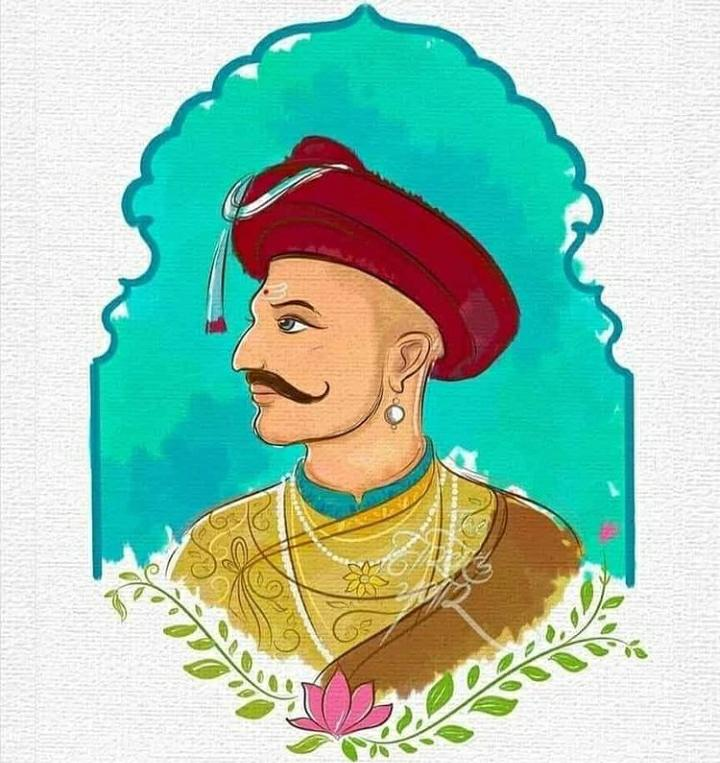
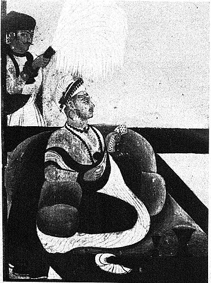
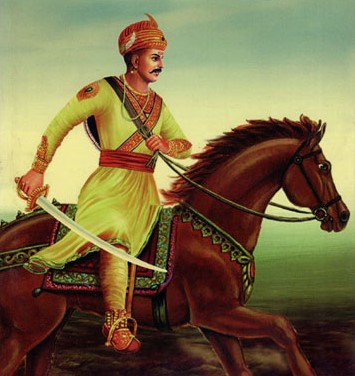
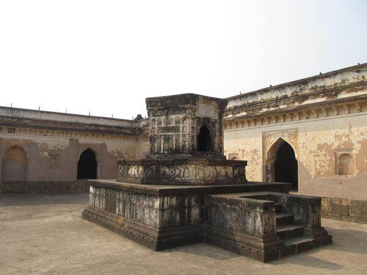

BAJIRAO BALLAL PESHWE
 The only warrior who remained undefeated till his death and popularly known asShreemant Bajirao Peshwe (The Undefeated Warrior)
Early Life
☛ Bajirao I was the seventh Peshwa of the Maratha Confederacy.
☛ He was born into the Bhat Family in Sinnar near Nashik on 18 August 1700
☛ Son of Balaji Vishwanath the Peshwa of Shahu Maharaj I and his mother Radhabai Barve. Baji Rao had a younger brother named Chimaji Appa and two younger sisters Anubai and Bhiubai.
☛ Baji Rao was inspired by the lives of Shivaji Maharaj, Ramchandra Pant Amatya and Santaji Ghorpade.
☛ Bajirao displayed a passion for the military at an early age and often accompanied his father on military campaigns
.
☛ His expedition to Delhi in 1719 with his father convinced that the Mughal Empire was disintegrating and unable to resist northward Maratha expansion.
Appoinment as Peshwa
☛ Bajirao was appointed Peshwa, succeeding his father, by Shahu Maharaj on 17 April 1720
☛ Bajirao convinced Shahu Maharaj that the Empire had to go on the offensive against its enemies to defend itself.
☛ He believed that the Mughal Empire had to go on the decline, and wanted to take advantage of the situation with aggresive expansion into North India.
☛ He is reported to have said: Let us strike at the trunk of the withering tree and the branches will fall off themselves. Listen but to my counsel and I shall plant the Maratha flag on the walls of Attock . 
Military Conquests
☛ Year: 1724 Defeated Ujjain's Dayabahadur.
☛ Year: 1728(February) Defeated The Nizam in the famous battle of Paalkhed.
☛ Year: 1728(December) Defeated Muhammad Bangshah by assisting Bundelkhand's Chhatrasal King.
☛ Year: 1731 Defeated The Nizam in Bhopal for the third consecutive time.
☛ Year: 1733 War of Succession broke among the sons of Yakut Khan who was the Siddhi of Janjira. Bajirao sent a Maratha force and regained control of several portions of Konkan and besieged Janjira.
☛ These and as many as 40 battles were fought by the Great Bajirao and was undefeated in each of them. 
Death
☛Bajirao's body was exhausted due to ceaseless wars and military campaigns. He caught a virulent fever while being encamped in Raverkhedi and died on 28 April 1740. He was cremated the same day on the banks of Narmada River. Balaji Baji Rao ordered Ranoji Shinde to build a chhatri as a memorial. The memorial is enclosed by a dharmashala. For more information, check out Bajirao Peshwa I
Created by Yash